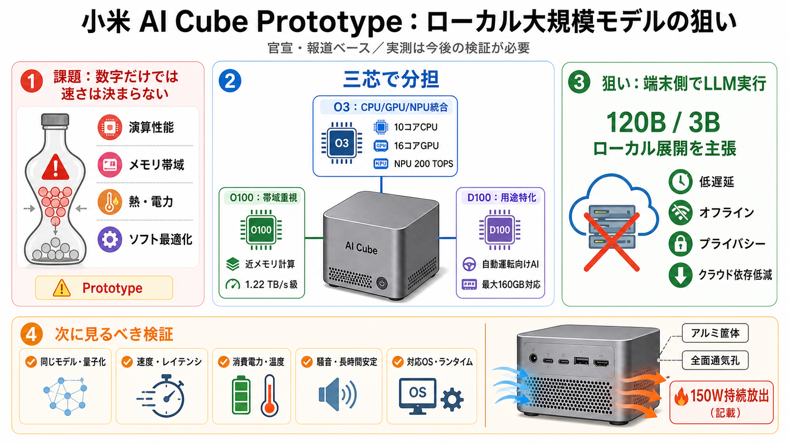

玄戒三芯合体！小米AI Cube工程版亮相：150W功耗 可本地跑大模型_新浪科技_新浪网
作为核心算力来源，玄戒O3定位AI旗舰SoC，采用了10核全大核CPU架构及16核G2-Ultra NX GPU，并集成200 TOPS的低功耗NPU。 为了解决AI推理中的数据传输瓶颈，该机还搭载了玄戒O100 AI加速芯片，该芯片通过…

作为核心算力来源，玄戒O3定位AI旗舰SoC，采用了10核全大核CPU架构及16核G2-Ultra NX GPU，并集成200 TOPS的低功耗NPU。 为了解决AI推理中的数据传输瓶颈，该机还搭载了玄戒O100 AI加速芯片，该芯片通过…
IT之家从发布会现场了解到，这款迷你主机内部的玄戒 O3 是一款 AI 旗舰 SoC，采用 10 核全大核 CPU 架构、16 核 G2-Ultra NX GPU，拥有 200 TOPS 低功耗 NPU。 玄戒 O100 是一款高带宽 A…
人工智能频道 # 小米发布AI Cube原型机：三芯协同支持1200亿参数大模型本地运行 2026年8月24日，小米在玄戒技术沟通会上正式发布AI Cube Prototype工程版迷你主机。 该设备采用三芯片协同架构，由玄戒O3、玄…
### 小米官宣行业首颗6nm 3D堆叠AI芯片 玄戒O100达1.22TB/s超高带宽 快科技 2026-08-25 02:41:25 突破500万分、十核全大核设计 小米晒玄戒O3性能：领先苹果A19 Pro ### 突破500万…
## 小米玄戒O3正式发布 10核CPU+16核GPU 全模块All in AI 安兔兔 8月24日，小米在玄戒芯片技术沟通会上正式发布玄戒O3，官方称这是小米为最高端产品打造的"AI旗舰SoC"，同场还发布了AI加速芯片O100和车载…